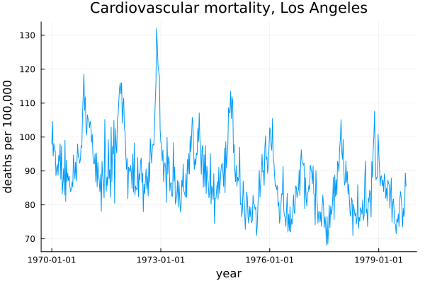
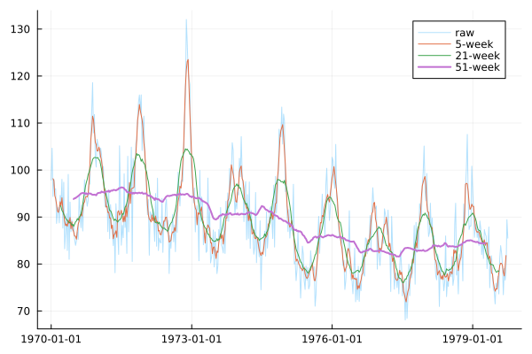
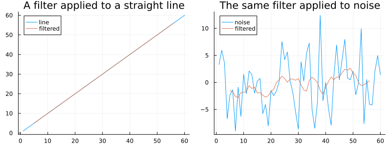
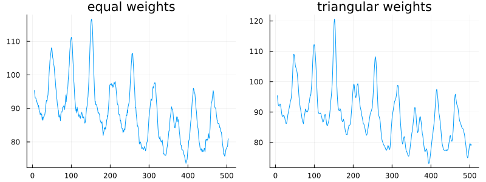
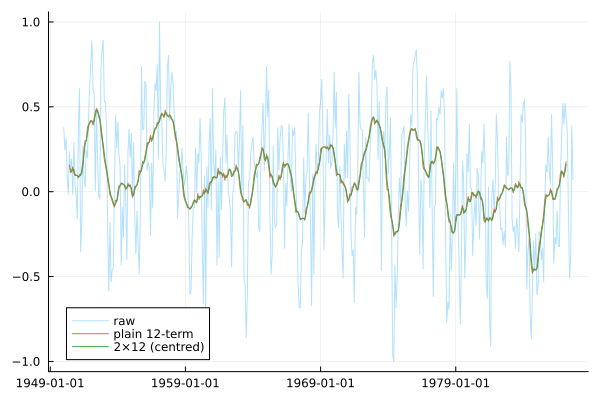
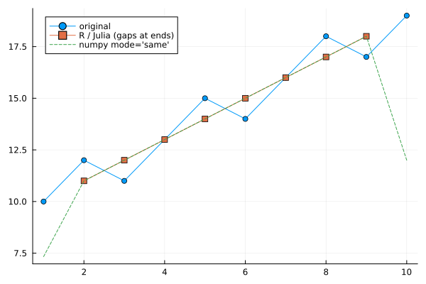

Filters and Moving Averages
using TSAnalytics, Plots
cmort = dataset("cmort")
plot(cmort.date, cmort.value; title="Cardiovascular mortality, Los Angeles",
xlabel="year", ylabel="deaths per 100,000", legend=false)
Five hundred and eight weekly observations. Something is going on in this series — a slow decline across the decade, quite possibly some seasonal rhythm on top of it — but the week-to-week jumps are large enough that any specific claim about the shape is close to arguing from noise. The eye's instinct, looking at this, is to average nearby points together and see what survives. That instinct is correct, and this chapter is entirely about what happens once you act on it.
Averaging nearby points
using Statistics
ma5 = moving_average(cmort.value, 5)
ma21 = moving_average(cmort.value, 21)
ma51 = moving_average(cmort.value, 51)
plot(cmort.date, cmort.value; alpha=0.3, label="raw")
plot!(cmort.date, ma5; label="5-week")
plot!(cmort.date, ma21; label="21-week")
plot!(cmort.date, ma51; label="51-week", linewidth=2)
for (w, ma) in ((5, ma5), (21, ma21), (51, ma51))
retained = var(filter(!isnan, ma)) / var(cmort.value)
println("window=$w: variance retained = $(round(retained, digits=3))")
endwindow=5: variance retained = 0.796
window=21: variance retained = 0.499
window=51: variance retained = 0.235The 5-week average still wobbles almost as much as the raw series — it retains four-fifths of the original variance, which is barely a smoothing at all. The 51-week average is genuinely smooth, and has lost the seasonal pattern entirely along with most of a year's worth of observations from each end; it keeps under a quarter of the original variance. The 21-week average sits close to the midpoint of the two, retaining almost exactly half — a real, checkable property of this particular series, not an arbitrary label — and is arguably the most useful of the three for seeing both the slow decline and the annual rhythm at once, though "most useful" here is still doing some of the work that only the question being asked can finish.
The trade-off itself is not a nuisance waiting to be optimised away. A wider window buys smoothness and pays for it in resolution and in observations lost at both ends, and there is no window width that is correct in the abstract. Someone asking about the annual cycle wants a narrow window; someone asking about the decade-long decline wants a wide one. The same 508 numbers support both questions and neither answer is more "correct" than the other.
using Random
Random.seed!(3)
n = 60
straight = collect(1.0:n)
noise = randn(n) .* 5
p1 = plot(straight; label="line", title="A filter applied to a straight line")
plot!(p1, moving_average(straight, 9); label="filtered")
p2 = plot(noise; label="noise", title="The same filter applied to noise")
plot!(p2, moving_average(noise, 9); label="filtered")
plot(p1, p2; layout=(1,2), size=(800,300))
This is the conceptual centre of the whole chapter. Applied to the straight line, the filter returns the straight line back, essentially untouched — a line has no "fast" movement for the filter to remove. Applied to noise, it returns something with a fraction of the original variance, because noise is nothing but fast movement. A moving average, seen this way, is not a general-purpose smoother at all. It is a device that lets slow movement through and suppresses fast movement, and "trend" and "noise" turn out to be nothing more than names for those two speeds. That is a frequency-domain idea showing up here in time-domain clothing, and Chapter 6 will give it its proper name and its proper machinery — two sentences here are enough, and no more.
A filter is a list of weights
A moving average is the special case where every weight in the list is equal. Nothing about filtering requires that.
equal_w = fill(1/9, 9)
tri_w = [1,2,3,4,5,4,3,2,1] ./ 25
p1 = plot(convolution_filter(cmort.value, equal_w); title="equal weights", legend=false)
p2 = plot(convolution_filter(cmort.value, tri_w); title="triangular weights", legend=false)
plot(p1, p2; layout=(1,2), size=(800,300))
At the same nominal width the triangular filter is visibly smoother, because it stops pretending the observation nine weeks away is exactly as informative as the one next door. This is the entire idea behind the Henderson filters official statistical agencies use in practice, and Chapter 38 returns to them properly. The point worth taking now is narrower: a filter's width and its shape are two separate choices, and most treatments only ever let a reader vary the first one.
x = [10.0, 12, 11, 13, 15, 14, 16, 18, 17, 19]
recursive_filter(x, [0.5])10-element Vector{Float64}:
10.0
17.0
19.5
22.75
26.375
27.1875
29.59375
32.796875
33.3984375
35.69921875A convolution filter and a recursive filter are not two flavours of the same idea; they are different operations entirely. The convolution filter above combines nearby inputs. This one feeds its own output back into itself — 10, 17, 19.5, 22.75, … — so every value depends on the entire history before it, not on some fixed-width neighbourhood. That is not smoothing in any ordinary sense. It is accumulation, and it grows without bound on a series that itself has no reason to settle down.
The two filter types have genuinely different performance characteristics, not just different formulas. A convolution filter at any position depends only on a fixed window of inputs, so it can be computed independently at every point — no state carried between positions. A recursive filter's output at position t depends on its own output at t-1, so it has to be computed as a single sequential pass with no shortcuts, and cannot be split across positions the way the convolution version can.
The even-order problem
soi = dataset("soi")
ma12_plain = moving_average(soi.value, 12; centre=false)
ma12_2x = moving_average(soi.value, 12) # default centre=true
plot(soi.date, soi.value; alpha=0.3, label="raw")
plot!(soi.date, ma12_plain; label="plain 12-term")
plot!(soi.date, ma12_2x; label="2×12 (centred)")
An odd-length filter has a middle observation to sit on top of; a 12-term filter does not, so its plain output sits half a month off from any actual observation. On monthly data with an annual cycle that matters a great deal, because twelve is exactly the period most worth averaging over cleanly. The fix, seen in the second line above, is to average two consecutive 12-term averages together — moving_average's own default, centre=true, does exactly this — which recentres the result onto real observations and produces the "2×12" filter that classical seasonal decomposition uses throughout. Meeting this here means Chapter 14 will not need to explain it as a surprise.
f = fill(1/12, 12)
s1 = convolution_filter(soi.value, f; sides=1)
s2 = convolution_filter(soi.value, f; sides=2)
println("sides=1 -- NaN at the end? ", isnan(s1[end]))
println("sides=2 -- NaN at the end? ", isnan(s2[end]))
println("sides=1 -- NaN at the start? ", isnan(s1[1]))
println("sides=2 -- NaN at the start? ", isnan(s2[1]))sides=1 -- NaN at the end? false
sides=2 -- NaN at the end? true
sides=1 -- NaN at the start? true
sides=2 -- NaN at the start? trueThe centred filter (sides=2) needs observations from both sides of each point, so it genuinely cannot be computed for the most recent observations — and in real-time monitoring, those are exactly the observations anyone cares about. The trailing filter (sides=1) can be computed right up to the very last point, at the cost of a lag: its estimate of "now" is really an estimate of conditions some weeks earlier, smeared forward. Neither is the better choice in the abstract. The right one depends on whether the question is about the past, where a centred filter is free to look in both directions, or about the present, where only a trailing filter has anything to say — and picking the wrong one produces a confident answer about a moment that has already gone.
What happens at the edges
x = [10.0, 12, 11, 13, 15, 14, 16, 18, 17, 19]
r_pkg = convolution_filter(x, fill(1/3, 3); sides=2)
r_pkg10-element Vector{Float64}:
NaN
11.0
12.0
12.999999999999998
14.0
15.0
15.999999999999998
17.0
18.0
NaNThe three-term moving average above matches R's stats::filter and this package's own convention exactly: NaN at both ends, real numbers in between, nothing invented. Handed the identical data, numpy's convolve(x, w, mode='same') returns a number for every position instead — and the first of those numbers, checked directly, is 7.333, computed as (0 + 10 + 12)/3 because numpy zero-pads past the edge of the series rather than admitting it cannot compute an answer there. The smallest actual observation in this data is 10. A value below every real observation in the series has been manufactured purely by the padding, and it will happen at both ends of any series filtered this way — a dip that is not in the data, produced by a function that never says so.
plot([1,2,3,4,5,6,7,8,9,10], x; label="original", marker=:circle)
plot!(2:9, r_pkg[2:9]; label="R / Julia (gaps at ends)", marker=:square)
plot!([1,2,3,4,5,6,7,8,9,10], [7.333,11,12,13,14,15,16,17,18,12]; label="numpy mode='same'", linestyle=:dash)
R's stats::filter(x, rep(1/3,3), sides=2) returns NA for both endpoints — verified directly. numpy's convolve(x, w, mode='same') returns a number for every position, including 7.333 where the true minimum of the data is 10 — also verified directly. mode='valid' avoids inventing values but silently returns a shorter series instead, which then misaligns against the original if a caller is not careful to track the offset. This package follows R: convolution_filter fills unmeasurable positions with NaN rather than a padded guess, confirmed directly from its own source (out = fill(NaN, n) at the top of the function). A reader arriving from numpy should expect a shorter run of usable output here, not a shorter array — the array stays full length, with NaN marking exactly where the padding would otherwise have lied.
The general lesson is worth carrying past this one function: a function that returns a number for every input is not automatically more useful than one that admits it cannot compute some of them. It is less useful, because it has moved the problem from a place a reader would notice — a gap, or a missing value — to a place they would not: a plausible-looking number sitting quietly among the real ones.
The Reserve Bank and MoSPI publish most monthly indicators with a lag of several weeks, so anyone tracking current conditions is already looking at data that is not quite current. Smooth that data with a trailing filter, and the filter's own lag stacks on top of the publication lag rather than replacing it. A 12-month trailing average of a series that was itself six weeks late describes conditions closer to a year old than to today — a perfectly reasonable thing to do deliberately, and a genuinely misleading thing to do without noticing. A centred filter avoids this particular trap and cannot be computed for the most recent months at all; there is no arrangement that avoids the trade-off altogether, only a choice about which side of it to be explicit about.
Where this leaves you
Every filter in this chapter rests on one assumption that has never been checked: that nearby observations are actually related to each other. Every window width chosen above leaned on that assumption without measuring it once. Measuring it, precisely, is Chapter 5.